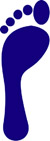

The Runners Guide
The Runners Guide
Choosing a Running Shoe
There’s no single 'best shoe' – everyone has different needs. All sorts of things - your biomechanics, your weight, the surfaces you run on, and obviously, the shape of your feet - mean that one person's ideal shoe can be unsuitable for another person.
We divide our shoes into four main categories (stability, performance, neutral and minimalist):
Stability
Recommended for runners who are mild to moderate over pronators and who generally have low to normal arches. These runners tend to need a shoe with a combination of good support and midsole cushioning.
Performance
Recommended either for racing or, if you’re biomechanically efficient, for training. They have varying degrees of support and cushioning, but at 250-300g, they’re generally lighter and narrower than other running shoes.
Neutral
Recommended for runners who need maximum midsole cushioning and minimum medial support. These shoes are best for biomechanically efficient runners (with minimum pronation) and midfoot or forefoot strikers with high or normal arches.
Minimalist
Recommended for biomechanically efficient runners who want maximum responsiveness and a stripped-down shoe while retaining an element of cushioning. These are seen as the mid point between neutral cushioned and performance shoes
Wet Test
The first step in finding your basic shoe needs is to try our 'Wet Test', below or, preferably, to visit a biomechanics expert or experienced shoe retailer.
The Wet Test works on the basis that the shape of your wet footprint on a dry floor or piece of paper roughly correlates with the amount of stability you might need in your shoe. It will show you what features you should look for and equip you with the basic knowledge you need to make the most informed decision when choosing a running shoe.
|  |
The Normal Foot Normal feet have a normal-sized arch and will leave a wet footprint that has a flare, but shows the forefoot and heel connected by a broad band. A normal foot lands on the outside of the heel and rolls inwards slightly to absorb shock. It’s the foot of a runner who is biomechanically efficient and therefore doesn’t need a motion control shoe. Best shoes: Stability shoes with moderate control features. |
| The Flat Foot This has a low arch and leaves a print which looks like the whole sole of the foot. It usually indicates an overpronated foot – one that strikes on the outside of the heel and rolls inwards (pronates) excessively. Over time, this can cause many different types of overuse injuries. Best shoes: Motion control shoes, or high stability shoes with firm midsoles and control features that reduce the degree of pronation. Stay away from highly cushioned, highly curved shoes, which lack stability features. | |
|
The High-Arched Foot This leaves a print showing a very narrow band or no band at all between the forefoot and the heel. A curved, highly arched foot is generally supinated or underpronated. Because it doesn’t pronate enough, it’s not usually an effective shock absorber. Best shoes: Cushioned (or 'neutral') shoes with plenty of flexibility to encourage foot motion. Stay away from motion control or stability shoes, which reduce foot mobility. | |